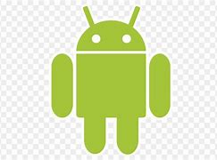

El sistema operativo es el software que coordina y dirige todos los servicios y aplicaciones que utiliza el usuario en una computadora, por eso es el mas importante y fundamental. Se trata de programas que permiten y regulan los aspectos mas basicos del sistema.
Los sistemas operativos, tambien llamados nucleos o kernels, suelen ejecutarse de manera privilegiada respecto al resto del software, sin permitir que un programa cualquiera realice cambios de importancia sobre el que puedan comprometer su funcionamiento.
Son parte esencial del funcionamiento de los sistemas informaticos y la pieza de software central en la cadena de procesos, ya que establecen las condiciones minimas para que todo funcione: la administracion de los recursos, el metodo de comunicacion con el usuario y con otros sistemas, las aplicaciones adicionales.
El sistema operativo posee tres componentes esenciales o paquetes de software que permiten la interaccion con el hardware:
Es un sistema operativo, es decir, un conjunto de programas que posibilita la administracion de los recursos de una computadora. Este tipo de sistemas empieza a trabajar cuando se enciende el equipo para gestionar el hardware a partir desde los niveles mas basicos.
Es el sistema operativo de Apple para sus computadoras de escritorio y portatiles. Mac OS son las siglas de Macintosh Operating System o lo que es lo mismo Sistema Operativo Macintos. Este sistema operativo es exclusivo para los dispositivos producidos por Apple, cualquier copia que exista de un sistema operativo Mac representa un plagio para la compania y varias demandas existen en la actualidad.
Este sistema operativo basado en el nucleo Linux opera en celulares y otros artefactos dotados de pantalla tactil. Fue desarrollado por Android Inc. y comprado posteriormente por Google, gracias a lo cual es tan popular que las ventas de sistemas informaticos Android superan a las de IOS (para celulares Macintosh) y a las de Windows Phone.

Caracteristicas de un sistema operativo.